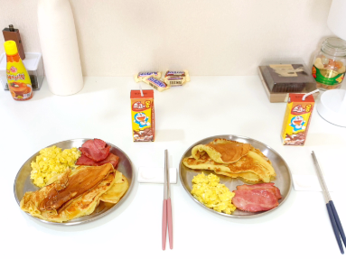

22.03.01
요거트 빙수 사오기🍨
곰옷을 입고 털레털레 요거트 빙수를 사러갔다.
22.03.03
어느 날 꽃을 들고 나타난 너구리!
어디를 가는 걸까요🤔
바로바로 김다시와 가평에 가는 거랍니다~🙂
새벽에 편의점을 털고 온 너구리들🦝
보글보글 놀이를 하며 즐거운 시간을 보냈어요
조금 야했나...?
22.03.04
자고 일어나서 내가 먹고 싶어서 만들라구 가져간
카레를 맛있게 해먹었다.닝닝이도 맛있게 먹었다!
바람이 엄청나게 불던 두물머리에서
우리는 산책(사실 바람에 날려간 것)을 잔뜩했다
멋지게 생긴 우락부락 핫도그도 하나 사서 나눠먹었다😋
22.03.05
우리는 한동안 꽤 성실하게 집 근처에서 포장을 해 먹었다.
이 김밥도 포장해 먹은 것이다!
포장 주문은 우리가 생활비를 낭비하지 않았다는 것에
보람찬 맛이 났다
성실쟁이 우리는 고를 사람도 없었지만
성실하게 투표를 하러 가서 인증샷을 찍었다🤗
22.03.06
치킨을 시킨다고 하면 생맥을 시킬 정도로
우리는 청광에 살 때 치맥을 자주 먹었다.
22.03.09
기염둥이가 보내준 사진. 너무 귀여움🫠
22.03.10
우리 이번엔 어디 가요?
바로바로~
인:인제가 좋다
천:천만에 말씀 인천이 좋다
인천에 갔다! 우리는 도착하자마자 칼국수를 잡아먹었다
아직 사진 바보들이에요

멋진 척하는 B가 기다리고 있는 것은 맛있는 새우튀김이다🦐
22.03.13

기염둥이 언니가 계란말이에 김다시❤️를 써줬다
그리고 추후 언니는 얼굴에도 김다시❤️를 쓰게 된다
22.03.15
술도 잘 마시지 않는 나지만 칵테일 재료를 사러 남대문에 갔다.
주류상가에서 술을 사고 마땅한 밥집을 찾지 못해
우리는 편의점 라면을 먹었다. 정말 맛있었다...
나는 약을 끊기로 했고, B는 기념하자며 케이크를 사주었다.
그렇게 기념일과는 다른 1일이 생겼다.
22.03.16
김다시 영화관 오픈했습니다~
같이 영화봐요😊
팝콘을 실컷 먹고 저녁에 또 고기를 잡아먹는 우리였다.
22.03.18
너희들 또 뭐 먹니?😎
샤브샤브요 진짜 맛있겠죠?🙂
22.03.20
닝우 어머니께서 주신 오리고기에
고추장찌개를 같이 먹었다
이 때 닝우는 고추장찌개를 만들면 꼭 소주를 마셨다🍾
B의 어머니께서 코로나에 걸리셔서 아빠 반찬을 드릴 수가 없었다.
그때 김다시가 등장해서 (해본적 없는)고등어무조림과
(해본적 없는)소불고기와 (자신 있는)고추장찌개를 만들었다
22.03.21
김밥 만들라고~!
네 김밥 나왔습니다 손님🫡
올림픽공원으로 소풍을 갔다.
봄소풍이라 바람이 참 좋았다.
돗자리에 누워 닝우와 보내는 봄날은 참 좋다
22.03.22
내 안에는 햄토리가 산다🐹
꼬북이도 산다
자기도 산다 !
22.03.23
닝닝이가 핫케이크...🤤 이렇게 돼서 아침으로 핫케이크를 만들었다
햇살이 잘 드는 아침에 닝닝이와 브런치를 먹으니 기분이 좋았다
22.03.24
너무나도 맛있는 청년다방
내가 인사이드 아웃을 보고 싶어 해서 자기가 같이 봐주었다
남대문에서 사온 술
예쁜 술 사와서 집에서 분위기 잡을라구 그랬다🫣
그치만 닝우는 그냥 쓴 술이 더 좋다구 했다
22.03.29
닝우가 저 잠옷을 입은 걸 좋아한다
왜냐면 옷이 커서 너무나도 귀엽다😆
닝우는 평화롭다 앞으로 무슨 일이 닥칠지 모르고...
22.03.31
3월의 마지막 날
깅다시는 어제 코로나 확진 판정을 받았다
자가격리 7일 중 첫째날 심심함에 폭주를 한다